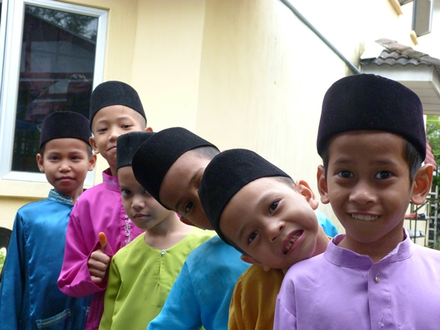
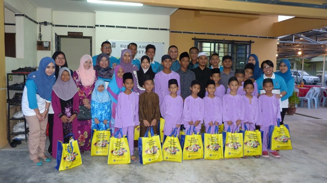
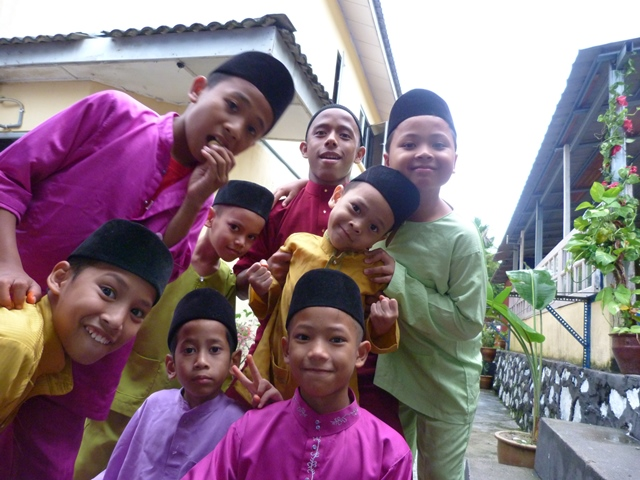

Location
No. 2, Jalan Setia Perdana U13/27BAlam Nusantara, Setia Alam
Seksyen 13
40170 Shah Alam
Selangor Darul Ehsan
Bank Account
 Account No.:
Account No.:
5620 1210 6564
Pusat Jagaan Budi Bistari
Contact Us
013-2483969(Pn. Aishah Ghazali)
011-3743729
(En. Sufian)
admin@budibistari.com
Services
Apart from providing hostel needs for orphans and those in need of protection here, Rumah Amal Budi Bistari also provides the following services:
- Provide adequate lessons and education for children to prepare for the future to have success in this world and security in the hereafter.
- Distributing all donations received not only for the children who live in this charity house but also given to orphans and other asnafs who live with their families.
- Opening Al-Quran and fardhu ain classes for the children of the community.

Care & Nursing Center

The children who live in this charity house are trained to live independently and practice noble manners as their clothing. The cleanliness and tidiness of the hostel is done together, in groups and in turns.
Religious Studies & Education

In addition to the emphasis on the basics of fardhu ain as a guideline of life, human or spiritual education is the main education that is highly emphasized to the children who live here. Every time they are educated to know God until there is a sense of love, affection and fear of Him so that they have a big and strong soul to go through this life. They are disciplined with congregational prayers at all times, reciting the Quran, tahlil and bertahajjud (qiyamullail) every day.
Learning
The children who live in this dormitory also always get guidance to understand the lessons learned in school. They are assisted in completing school work by experienced teachers who volunteer to help them especially on weekends and school holidays.
Activities & Skills

In addition to study and learning activities, the children are also exposed to various activities and skills appropriate to their age so that they know how to live independently after they leave this charity house. Such activities and exposure in addition to nourishing the minds and bodies of children, it is also very helpful in building the soul and testimony of children. Among the activities are as follows:
- Cultural activities
- Economic activity (small business)
- Activities with the community
.png)
{kind=link}
{kind=link}
{kind=link}